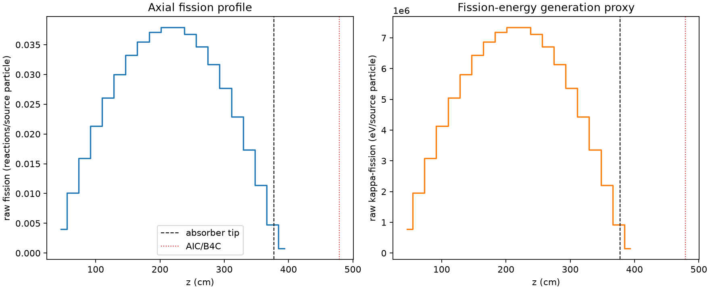
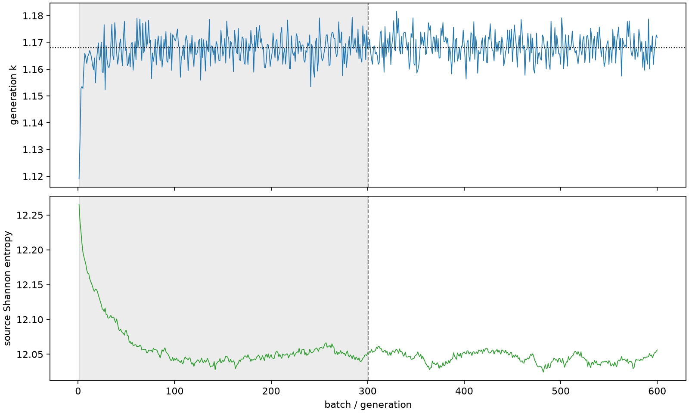

| field | value |
|---|---|
| experiment | V2-STAGE_128_OGRENCI_02-0022 |
| k | 1.167938858629599 |
| MC standard error | 0.00019555939230086976 |
| seconds | 1005.0461854050009 |
| acceptance | not_assessed |
| convergence | review_required |
Completed is output integrity only; physical and statistical review required. Zero tallies do not prove zero production or zero uncertainty.
| diagnostic | value |
|---|---|
| geometric fuel voxels | 5280 |
| zero fission tally voxels | 0 |
| low signal fuel voxels | 0 |
| low signal fission share | 0.0 |
| low signal kappa share | 0.0 |
| important fission share | 0.950003159295214 |
| previous filter included | 5280 |
| duration estimate s | 1562.5173488400023 |
| actual minus estimate s | -557.4711634350015 |
| fission relative MC error | statistics |
|---|---|
| all_geometric_fuel | {"voxels": 5280, "positive_mean_voxels": 5280, "zero_mean_voxels": 0, "undefined_relative_error_voxels": 0, "median": 0.009804978775607806, "p95": 0.03134994810642211, "maximum": 0.06394742429630475} |
| low_signal | {"voxels": 0, "positive_mean_voxels": 0, "zero_mean_voxels": 0, "undefined_relative_error_voxels": 0, "median": null, "p95": null, "maximum": null} |
| important_95pct | {"voxels": 4124, "positive_mean_voxels": 4124, "zero_mean_voxels": 0, "undefined_relative_error_voxels": 0, "median": 0.009121473092267306, "p95": 0.013455463015346157, "maximum": 0.0169148214272811} |
| outside_previous_filter | {"voxels": 0, "positive_mean_voxels": 0, "zero_mean_voxels": 0, "undefined_relative_error_voxels": 0, "median": null, "p95": null, "maximum": null} |
| kappa_fission relative MC error | statistics |
|---|---|
| all_geometric_fuel | {"voxels": 5280, "positive_mean_voxels": 5280, "zero_mean_voxels": 0, "undefined_relative_error_voxels": 0, "median": 0.009793137456392355, "p95": 0.03130685052020372, "maximum": 0.06382905114617686} |
| low_signal | {"voxels": 0, "positive_mean_voxels": 0, "zero_mean_voxels": 0, "undefined_relative_error_voxels": 0, "median": null, "p95": null, "maximum": null} |
| important_95pct | {"voxels": 4124, "positive_mean_voxels": 4124, "zero_mean_voxels": 0, "undefined_relative_error_voxels": 0, "median": 0.009111570883629322, "p95": 0.013438561994992018, "maximum": 0.01689622098044893} |
| outside_previous_filter | {"voxels": 0, "positive_mean_voxels": 0, "zero_mean_voxels": 0, "undefined_relative_error_voxels": 0, "median": null, "p95": null, "maximum": null} |
| axial bin | fission share | kappa-fission share |
|---|---|---|
| 1 | 0.008405045876908416 | 0.008405479353962205 |
| 2 | 0.021207654394340438 | 0.021207700739844737 |
| 3 | 0.033441489830814485 | 0.03344134484533974 |
| 4 | 0.04471250467559139 | 0.04471233505279811 |
| 5 | 0.054601414411455475 | 0.05460119558283305 |
| 6 | 0.06288983113172174 | 0.0628897820230115 |
| 7 | 0.06965673868617525 | 0.06965667400481391 |
| 8 | 0.07431251074877437 | 0.07431231510492609 |
| 9 | 0.07772223069623022 | 0.07772204426245025 |
| 10 | 0.07942554190024688 | 0.07942558190253007 |
| 11 | 0.079421410322298 | 0.07942147768815928 |
| 12 | 0.07711449152377936 | 0.07711452932770131 |
| 13 | 0.07272284376083964 | 0.07272250432557052 |
| 14 | 0.06636628398035328 | 0.06636599513213229 |
| 15 | 0.0580687174138183 | 0.0580684560421345 |
| 16 | 0.04805255856411413 | 0.0480525239782087 |
| 17 | 0.03635508692806119 | 0.03635505707637557 |
| 18 | 0.023903108658397582 | 0.023903025984642574 |
| 19 | 0.010012569160841246 | 0.010013293941546613 |
| 20 | 0.0016079673352384816 | 0.0016086836310189954 |
Histories include the inactive-to-active transition at batch 300. kappa-fission approximates fission energy production, not total heat deposition.

